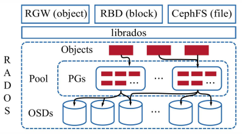
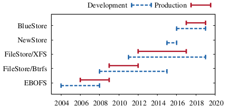

File Systems Unfit as Distributed Storage Backends : Lessons from 10 Years of Ceph Evolution
Table of Contents
Permission to make digital or hard copies of all or part of this work for personal or classroom use is granted without fee provided that copies are not made or distributed for profit or commercial advantage and that copies bear this notice and the full citation on the first page. Copyrights for components of this work owned by others than the author(s) must be honored. Abstracting with credit is permitted. To copy otherwise, or republish, to post on servers or to redistribute to lists, requires prior specific permission and/or a fee. Request permissions from permissions@acm.org. SOSP '19, October 27–30, 2019, Huntsville, ON, Canada © 2019 Copyright held by the owner/author(s). Publication rights licensed to ACM. ACM ISBN 978-1-4503-6873-5/19/10…$15.00 https://doi.org/10.1145/3341301.3359656
Abstract
For a decade, the Ceph distributed file system followed the conventional wisdom of building its storage backend on top of local file systems. This is a preferred choice for most distributed file systems today because it allows them to benefit from the convenience and maturity of battle-tested code. Ceph's experience, however, shows that this comes at a high price. First, developing a zero-overhead transaction mechanism is challenging. Second, metadata performance at the local level can significantly affect performance at the distributed level. Third, supporting emerging storage hardware is painstakingly slow.
Ceph addressed these issues with BlueStore, a new backend designed to run directly on raw storage devices. In only two years since its inception, BlueStore outperformed previous established backends and is adopted by 70% of users in production. By running in user space and fully controlling the I/O stack, it has enabled space-efficient metadata and data checksums, fast overwrites of erasure-coded data, inline compression, decreased performance variability, and avoided a series of performance pitfalls of local file systems. Finally, it makes the adoption of backwards-incompatible storage hardware possible, an important trait in a changing storage landscape that is learning to embrace hardware diversity.
CCS Concepts • Information systems → Distributed storage; • Software and its engineering → File systems management; Software performance. Keywords Ceph, object storage, distributed file system, storage backend, file system
1 Introduction
Distributed file systems operate on a cluster of machines, each assigned one or more roles such as cluster state monitor, metadata server, and storage server. Storage servers, which form the bulk of the machines in the cluster, receive I/O requests over the network and serve them from locally attached storage devices using storage backend software. Sitting in the I/O path, the storage backend plays a key role in the performance of the overall system.
Traditionally distributed file systems have used local file systems, such as ext4 or XFS, directly or through middleware, as the storage backend [29, 34, 37, 41, 74, 84, 93, 98, 101, 102]. This approach has delivered reasonable performance, precluding questions on the suitability of file systems as a distributed storage backend. Several reasons have contributed to the success of file systems as the storage backend. First, they allow delegating the hard problems of data persistence and block allocation to a well-tested and highly performant code. Second, they offer a familiar interface (POSIX) and abstractions (files, directories). Third, they enable the use of standard tools (ls, find) to explore disk contents.
Ceph [98] is a widely-used, open-source distributed file system that followed this convention for a decade. Hard lessons that the Ceph team learned using several popular file systems led them to question the fitness of file systems as storage backends. This is not surprising in hindsight. Stone-braker, after building the INGRES database for a decade, noted that "operating systems offer all things to all people at much high overhead" [90]. Similarly, exokernels demonstrated that customizing abstractions to applications results in significantly better performance [31, 50]. In addition to the performance penalty, adopting increasingly diverse storage hardware is becoming a challenge for local file systems, which were originally designed for a single storage medium.
The first contribution of this experience paper is to outline the main reasons behind Ceph's decision to develop BlueStore, a new storage backend deployed directly on raw storage devices. First, it is hard to implement efficient transactions on top of existing file systems. A significant body of work aims to introduce transactions into file systems [39, 63, 65, 72, 77, 80, 87, 106], but none of these approaches have been adopted due to their high performance overhead, limited functionality, interface complexity, or implementation complexity. The experience of the Ceph team shows that the alternative options, such as leveraging the limited internal transaction mechanism of file systems, implementing Write-Ahead Logging in user space, or using a transactional key-value store, also deliver subpar performance.
Second, the local file system's metadata performance can significantly affect the performance of the distributed file system as a whole. More specifically, a key challenge that the Ceph team faced was enumerating directories with millions of entries fast, and the lack of ordering in the returned result. Both Btrfs and XFS-based backends suffered from this problem, and directory splitting operations meant to distribute the metadata load were found to clash with file system policies, crippling overall system performance.
At the same time, the rigidity of mature file systems prevents them from adopting emerging storage hardware that abandon the venerable block interface. The history of production file systems shows that on average they take a decade to mature [30, 56, 103, 104]. Once file systems mature, their maintainers tend to be conservative when it comes to making fundamental changes due to the consequences of mistakes. On the other hand, novel storage hardware aimed for data centers introduce backward-incompatible interfaces that require drastic changes. For example, to increase capacity, hard disk drive (HDD) vendors are moving to Shingled Magnetic Recording (SMR) technology [38, 62, 82] that works best with a backward-incompatible zone interface [46]. Similarly, to eliminate the long I/O tail latency in solid state drives (SSDs) caused by the Flash Translation Layer (FTL) [35, 54, 108], vendors are introducing Zoned Namespace (ZNS) SSDs that eliminate the FTL, again, exposing the zone interface [9, 26]. Cloud storage providers [58, 73, 109] and storage server vendors [17, 57] are already adapting their private software stacks to use the zoned devices. Distributed file systems, however, are stalled by delays in the adoption of zoned devices in local file systems.
In 2015, the Ceph project started designing and implementing BlueStore, a user space storage backend that stores data directly on raw storage devices, and metadata in a key-value store. By taking full control of the I/O path, BlueStore has been able to efficiently implement full data checksums, inline compression, and fast overwrites of erasure-coded data, while also improving performance on common customer workloads. In 2017, after just two years of development, BlueStore became the default production storage backend in Ceph. A 2018 survey among Ceph users shows that 70% use BlueStore in production with hundreds of petabytes in deployed capacity [60]. As a second contribution, this paper introduces the design of BlueStore, the challenges its design overcomes, and opportunities for future improvements. Novelties of BlueStore include (1) storing low-level file system metadata, such as extent bitmaps, in a key-value store, thereby avoiding on-disk format changes and reducing implementation complexity; (2) optimizing clone operations and minimizing the overhead of the resulting extent reference-counting through careful interface design; (3) BlueFS—a user space file system that enables RocksDB to run faster on raw storage devices; and (4) a space allocator with a fixed 35 MiB memory usage per terabyte of disk space.
In addition to the above contributions, we perform several experiments that evaluate the improvement of design changes from Ceph's previous production backend, FileStore, to BlueStore. We experimentally measure the performance effect of issues such as the overhead of journaling file systems, double writes to the journal, inefficient directory splitting, and update-in-place mechanisms (as opposed to copy-on-write).
2 Background
This section aims to highlight the role of distributed storage backends and the features that are essential for building an efficient distributed file system (Section 2.1). We provide a brief overview of Ceph's architecture (Section 2.2) and the evolution of Ceph's storage backend over the last decade (Section 2.3), introducing terms that will be used throughout the paper.
2.1 Essentials of Distributed Storage Backends
Distributed file systems aggregate storage space from multiple physical machines into a single unified data store that offers high-bandwidth and parallel I/O, horizontal scalability, fault tolerance, and strong consistency. While distributed file systems may be designed differently and use unique terms to refer to the machines managing data placement on physical media, the storage backend is usually defined as the software module directly managing the storage device attached to physical machines. For example, Lustre's Object Storage Servers (OSSs) store data on Object Storage Targets [102] (OSTs), GlusterFS's Nodes store data on Bricks [74], and Ceph's Nodes store data on Object Storage Devices (OSDs) [98]. In these, and other systems, the storage backend is the software module that manages space on disks (OSTs, Bricks, OSDs) attached to physical machines (OSSs, Nodes).
Widely-used distributed file systems such as Lustre [102], GlusterFS [74], OrangeFS [29], BeeGFS [93], XtreemFS [41], and (until recently) Ceph [98] rely on general local file systems, such as ext4 and XFS, to implement their storage backends. While different systems require different features from a storage backend, two of these features, (1) efficient transactions and (2) fast metadata operations appear to be common; another emerging requirement is (3) support for novel, backward-incompatible storage hardware.
Transaction support in the storage backend simplifies implementing strong consistency that many distributed file systems provide [41, 74, 98, 102]. A storage backend can seamlessly provide transactions if the backing file system already supports them [55, 77]. Yet, most file systems implement the POSIX standard, which lacks a transaction concept.
Therefore, distributed file system developers typically resort to using inefficient or complex mechanisms, such as implementing a Write-Ahead Log (WAL) on top of a file system [74], or leveraging a file system's internal transaction mechanism [102].
Metadata management is another recurring pain point in distributed file systems [69]. Inability to efficiently enumerate large directory contents or handle small files at scale in local file systems can cripple performance for both centralized [101, 102] and distributed [74, 98] metadata management designs. To address this problem, distributed file system developers use metadata caching [74], deep directory hierarchies arranged by data hashes [98], custom databases [89], or patches to local file systems [12, 13, 112].
An emerging requirement for storage backends is support for novel storage hardware that operates using backward-incompatible interfaces. For example, SMR can boost HDD capacity by more than 25% and hardware vendors claim that by 2023, over half of data center HDDs will use SMR [83]. Another example is ZNS SSDs that eliminate FTL and do not suffer from uncontrollable garbage collection delays [9], allowing better tail-latency control. Both of these new classes of hardware storage present backward-incompatible interfaces that are challenging for local, block-based file systems to adopt.
2.2 Ceph Distributed Storage System Architecture

Figure 1: High-level depiction of Ceph's architecture. A single pool with 3× replication is shown. Therefore, each placement group (PG) is replicated on three OSDs.
Figure 1 shows the high-level architecture of Ceph. At the core of Ceph is the Reliable Autonomic Distributed Object Store (RADOS) service [100]. RADOS scales to thousands of Object Storage Devices (OSDs), providing self-healing, self-managing, replicated object storage with strong consistency. Ceph's librados library provides a transactional interface for manipulating objects and object collections in RADOS. Out of the box, Ceph provides three services implemented using librados: the RADOS Gateway (RGW), an object storage similar to Amazon S3 [5]; the RADOS Block Device (RBD), a virtual block device similar to Amazon EBS [4]; and CephFS, a distributed file system with POSIX semantics.
Objects in RADOS are stored in logical partitions called pools. Pools can be configured to provide redundancy for the contained objects either through replication or erasure coding. Within a pool, the objects are sharded among aggregation units called placement groups (PGs). Depending on the replication factor, PGs are mapped to multiple OSDs using CRUSH, a pseudo-random data distribution algorithm [99]. Clients also use CRUSH to determine the OSD that should contain a given object, obviating the need for a centralized metadata service. PGs and CRUSH form an indirection layer between clients and OSDs that allows the migration of objects between OSDs to adapt to cluster or workload changes.
In every node of a RADOS cluster, there is a separate Ceph OSD daemon per local storage device. Each OSD processes client I/O requests from librados clients and cooperates with peer OSDs to replicate or erasure code updates, migrate data, or recover from failures. Data is persisted to the local device via the internal ObjectStore interface, which provides abstractions for objects, object collections, a set of primitives to inspect data, and transactions to update data. A transaction combines an arbitrary number of primitives operating on objects and object collections into an atomic operation. In principle, each OSD may make use of a different backend implementation of the ObjectStore interface, although clusters tend to be uniform in practice.
2.3 Evolution of Ceph’s Storage Backend

Figure 2: Timeline of storage backend evolution in Ceph. For each backend, the period of development, and the period of being the default production backend is shown.
The first implementation of the ObjectStore interface was in fact a user space file system called Extent and B-Tree-based Object File System (EBOFS). In 2008, Btrfs was emerging with attractive features such as transactions, deduplication, checksums, and transparent compression, which were lacking in EBOFS. Therefore, as shown in Figure 2, EBOFS was replaced by FileStore, an ObjectStore implementation on top of Btrfs.
In FileStore, an object collection is mapped to a directory and object data is stored in a file. Initially, object attributes were stored in POSIX extended file attributes (xattrs), but were later moved to LevelDB when object attributes exceeded size or count limitations of xattrs. FileStore on Btrfs was the production backend for several years, throughout which Btrfs remained unstable and suffered from severe data and metadata fragmentation. In the meantime, the ObjectStore interface evolved significantly, making it impractical to switch back to EBOFS. Instead, FileStore was ported to run on top of XFS, ext4, and later ZFS. Of these, FileStore on XFS became the de facto backend because it scaled better and had faster metadata performance [36].
While FileStore on XFS was stable, it still suffered from metadata fragmentation and did not exploit the full potential of the hardware. Lack of native transactions led to a user space WAL implementation that performed full data journaling and capped the speed of read-modify-write workloads, a typical Ceph workload, to the WAL's write speed. In addition, since XFS was not a copy-on-write file system, clone operations used heavily by snapshots were significantly slower.
NewStore was the first attempt at solving the metadata problems of file-system-based backends. Instead of using directories to represent object collections, NewStore stored object metadata in RocksDB, an ordered key-value store, while object data was kept in files. RocksDB was also used to implement the WAL, making read-modify-write workloads efficient due to a combined data and metadata log. Storing object data as files and running RocksDB on top of a journaling file system, however, introduced high consistency overhead. This led to the implementation of BlueStore, which used raw disks. The following section describes the challenges BlueStore aimed to resolve. A complete description of BlueStore is given in Section 4.